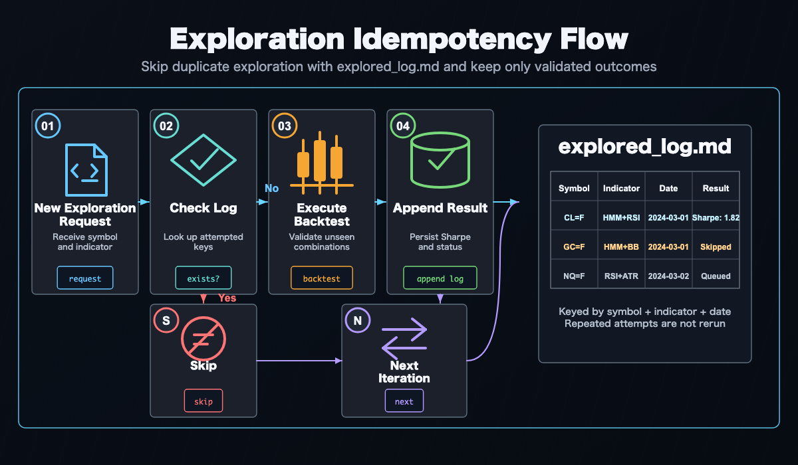

AI-Driven Strategy Exploration Workflow¶
Combining Claude Code, Codex, and similar AI coding agents with AlphaForge as the "brain" lets you autonomously drive idea → implementation → backtest → optimization → validation → live tuning.
Prerequisites
- Audience: intermediate-to-advanced users who already use AI coding agents (Claude Code / Codex). You should be comfortable writing prompts for an agent and understand how slash commands work.
- Requirements: AlphaForge binary v0.5.4+, or the
alpha-trademonorepo dev setup (alpha-forge+alpha-strategies). - Time budget: ~10 min for the initial setup. The exploration loop itself is long-running (hours to overnight) — plan to run it unattended (e.g., overnight) for best results.
- If you want to learn the manual CLI step by step first: read the End-to-End Strategy Workflow before coming back here. This page assumes you want the automated AI exploration path.
- Binary users: complete the "Minimum setup for binary users" section first. Where this page shows monorepo-style commands, you can substitute
alpha-forge(the binary on your PATH) instead.
Minimum setup for binary users¶
If you installed the binary via the installation guide, you can drive the /explore-strategies flow on this page with just three commands:
# 1. Create any working directory and initialize AlphaForge
mkdir my-strategies && cd my-strategies
alpha-forge system init
# 2. Make subsequent commands pick up this working directory's forge.yaml
# (add to ~/.zshrc / ~/.bashrc to make it permanent across shell restarts)
export FORGE_CONFIG=$(pwd)/forge.yaml
# 3. Open this directory in Claude Code (or Codex)
claude . # Claude Code
codex . # Codex CLI
alpha-forge system init generates the following (v0.5.4+):
| Path | Role |
|---|---|
forge.yaml |
Config (data provider, output paths, etc.) |
data/strategies/, data/results/, data/historical/, etc. |
Strategy / result / data storage |
data/explorer/goals/default/goals.yaml |
Default goal definition for AI exploration (required) |
data/explorer/goals/default/reports/ |
Output directory for /explore-strategies daily reports |
.claude/commands/{explore-strategies,analyze-exploration,grid-tune,tune-live-strategies,update-market-data}.md |
Slash commands for Claude Code |
.agents/skills/.../SKILL.md |
Skills for Codex |
docs/{quick-start,user-guide}.{ja,en}.md |
Bundled documentation |
Edit goals/default/goals.yaml to align the target symbols (exploration.assets) and pass criteria (target_metrics) with your own strategy development direction. Add more goals (e.g., goals/crypto/goals.yaml, goals/fx/goals.yaml) and you can run them in parallel with /explore-strategies --goal <name>.
After that, follow the rest of this page — the Overall Flow section below and Steps 1 through 4 — verbatim. The monorepo-style commands like uv --directory alpha-forge run alpha-forge or op run --env-file=... can simply be read as alpha-forge (or alpha-forge if you have it on your PATH) when using the binary.
Why AI agents × AlphaForge¶
AlphaForge is designed so that all configuration, strategies, and execution flow through JSON / YAML / CLI. This means:
- AI agents can generate, edit, and validate strategy JSON
- Backtest and optimization results return as structured data an agent can analyze
- Slash commands let you replay the same workflow idempotently
- You can run autonomous overnight exploration without depending on rate limits or human time
The result: humans focus on "directional decisions" and "pass/fail judgment", while exploration and parameter tuning are delegated to the agent.
Manual vs. AI-driven: when to use which¶
| Goal | Recommended flow |
|---|---|
| Understand every step of AlphaForge | End-to-End Strategy Development Workflow (manual CLI) |
| Quickly explore new indicator × symbol combinations | This page (AI-driven autonomous exploration) |
| Already have a promising strategy and want to fine-tune | Start from Step 3 /grid-tune |
| Monitor drift in live strategies | Step 4 /tune-live-strategies |
Recommended coding agents¶
A comparison of agents that pair well with alpha-forge as of April 2026:
| Agent | Strengths | Rate / cost (rough) | Slash-command support |
|---|---|---|---|
| Claude Code (recommended) | File-edit precision, long-running tasks, Sonnet/Opus mix | Subscription or API metered | ✅ Native .claude/commands/*.md |
| Codex CLI | Strong baseline, OpenAI models | API metered (e.g., GPT-5) | △ Custom prompts via config |
| Cursor | IDE integration, efficient interactive flow | Subscription | △ Composer / Rules workaround |
| Aider | OSS, multi-model, git integration | Model cost only | △ Manual /<command> aliases |
The rest of this page assumes Claude Code. With other agents, point them at .claude/commands/*.md to reproduce the same flow.
Setting up Claude Code for unattended runs¶
To run /explore-strategies --runs 0 (or any long continuous run) without stopping for permission prompts, you need to pre-authorize the required operations in Claude Code's allow list. Without this, Claude Code will pause and ask for confirmation every time it encounters an unlisted operation.
Add the following patterns to permissions.allow in .claude/settings.local.json (your personal settings — gitignored):
{
"permissions": {
"allow": [
"Write(alpha-strategies/data/strategies/*.json)",
"Bash(uv --directory alpha-forge run alpha-forge *)",
"Bash(FORGE_CONFIG=* uv --directory alpha-forge run alpha-forge *)",
"Bash(git -C */alpha-strategies add data/)",
"Bash(git -C */alpha-strategies commit *)",
"Bash(git -C */alpha-strategies push)",
"Bash(rm */alpha-strategies/data/strategies/*.json)",
"Bash(rm */data/strategies/*.json)"
]
}
}
All paths are relative to alpha-trade/ as the working root.
| Pattern | What it authorizes |
|---|---|
Write(alpha-strategies/data/strategies/*.json) |
Writing strategy JSON files (one per strategy) |
Bash(uv --directory alpha-forge run alpha-forge *) |
Direct alpha-forge execution |
Bash(FORGE_CONFIG=* uv --directory alpha-forge run alpha-forge *) |
Forge commands with any FORGE_CONFIG (relative or absolute) |
Bash(git -C */alpha-strategies add data/) |
Staging exploration results |
Bash(git -C */alpha-strategies commit *) |
Committing exploration results |
Bash(git -C */alpha-strategies push) |
Pushing to alpha-strategies |
Bash(rm */alpha-strategies/data/strategies/*.json) |
Deleting temp files for failed strategies |
Bash(rm */data/strategies/*.json) |
Same, handling different working directory contexts |
About settings.local.json
settings.local.json is listed in .gitignore and is never shared with teammates. Each developer must configure it individually in their own environment. Do not add these entries to the tracked settings.json.
If you already have a permissions.allow section
Merge the new entries into your existing array — do not overwrite the entire file, or you will lose your existing permissions.
Using 1Password
If you run alpha-forge via op run, add these patterns as well:
"Bash(op run --env-file=alpha-forge/.env.op -- uv --directory alpha-forge run alpha-forge *)",
"Bash(FORCE_COLOR=* FORGE_CONFIG=* op run * uv --directory alpha-forge run alpha-forge explore run *)",
"Bash(FORGE_CONFIG=* op run * uv --directory alpha-forge run alpha-forge strategy *)",
"Bash(FORGE_CONFIG=* op run * uv --directory alpha-forge run alpha-forge data fetch *)",
"Bash(FORGE_CONFIG=* op run * uv --directory alpha-forge run alpha-forge explore *)"
FORCE_COLOR=1 prefix is required
The /explore-strategies skill mandates that alpha-forge backtest run / alpha-forge optimize run / alpha-forge optimize walk-forward / alpha-forge explore run be prefixed with FORCE_COLOR=1 so that progress bars render correctly (alpha-forge issue #410). Because the command line begins with FORCE_COLOR=1, it does not match existing patterns that start with FORGE_CONFIG=... and may trigger a permission prompt that blocks unattended runs. Add the following patterns:
Detecting 1Password session expiry early (unattended runs)¶
For unattended runs (overnight batches, etc.), an expired op session causes every subsequent op run invocation to fail with an authentication error. The /explore-strategies skill runs alpha-forge system auth check op at the start of each loop iteration and stops the loop with exit code 2 when the session is invalid (alpha-forge issue #411).
# Verify session validity
uv --directory alpha-forge run alpha-forge system auth check op
echo "exit: $?" # 0 = valid, 2 = session expired / op missing / timeout
| Exit code | Meaning | Recommended action |
|---|---|---|
0 |
Session valid | Continue the loop |
2 |
Auth error (expired session, op CLI missing, etc.) | Stop the loop immediately, append a note to <goal_dir>/explored_log.md, and prompt the user to run interactive op signin |
The skill performs this check automatically — no extra configuration is needed. If you build a long-running loop manually, insert the same check at the head of each iteration.
Setting up Codex CLI for unattended runs¶
To run the same kind of long job with Codex CLI, configure the approval policy and sandbox scope instead of a command-by-command allow list like Claude Code's permissions.allow.
First, add an unattended profile to ~/.codex/config.toml:
Then start codex exec with that profile, pinning the working root and any additional writable directories:
codex exec \
--profile alforge-labs-unattended \
--cd /absolute/path/alpha-trade \
--add-dir /absolute/path/alpha-trade/alpha-strategies \
"Use the explore-strategies skill to explore the default goal with the equivalent of --runs 0."
Replace /absolute/path/ with your actual path (e.g., /Users/yourname/dev/alpha-trade). If --cd points at the alpha-trade monorepo root, most operations already stay inside the workspace. Add --add-dir when your strategy JSON output lives in a separate worktree or an external alpha-strategies checkout.
| Setting / option | Purpose |
|---|---|
approval_policy = "never" |
Prevent approval prompts during the run; failures are returned to Codex directly |
sandbox_mode = "workspace-write" |
Limit writes to the workspace and explicitly added directories |
--cd /.../alpha-trade |
Fix Codex's working root to the monorepo |
--add-dir /.../alpha-strategies |
Allow writes to a strategy JSON directory outside the working root |
Avoid full bypass by default
--dangerously-bypass-approvals-and-sandbox disables both approvals and sandboxing. Do not use it for normal local exploration unless you are running inside an externally isolated throwaway environment.
Prefetch data first
Codex's workspace-write sandbox may restrict network access depending on your environment. For symbols that need alpha-forge data fetch / alpha-forge data update, run /update-market-data or alpha-forge data fetch <SYMBOL> manually before starting the unattended run.
Overall flow¶
Prepare: /update-market-data — bring data up to date
↓
Choose a starting point (pick one of 3 exploration scenarios)
↓
Step 1: /explore-strategies [--goal <name>] [--runs N]
└─ Auto backtest → optimize → WFT for each symbol × indicator combo
Pre-filter: Sharpe ≥ 1.0 AND MaxDD ≤ 25%
↓
Step 2: /analyze-exploration
└─ Aggregate all logs; output next recommended candidates to recommendations.yaml
↓
Step 3: /grid-tune
└─ Exhaustive grid search on promising strategies + WFT re-validation
↓
Step 4: /tune-live-strategies
└─ Drift detection and re-tuning for live strategies
Preparation: Fetch historical data¶
Before starting exploration, make sure the target symbol data is up to date.
# Bulk incremental update of stored data (binary: alpha-forge data update <SYMBOL>)
> /update-market-data
/update-market-data runs alpha-forge data list to find registered symbols and calls alpha-forge data update on each. For brand-new symbols, run alpha-forge data fetch <SYMBOL> manually first.
Three exploration scenarios¶
AI agent × AlphaForge usage falls into three categories based on what you're starting from.

Scenario 1: Combinations from existing strategies / indicators¶
Starting point: Your existing strategy JSON files and the alpha-forge analyze indicator list catalog.
Typical flow:
- Tell Claude Code: "Take
alpha-forge strategy show multi_asset_hmm_bb_rsi_v1_qqqas the base and add MACD to create a derivative." - The agent edits the JSON and creates
multi_asset_hmm_bb_rsi_macd_v1_qqq.json alpha-forge strategy validate→alpha-forge strategy save→alpha-forge backtest run- If Sharpe improves, run
alpha-forge optimize runto fine-tune
Tip: With /explore-strategies, you can fully delegate combination selection through reporting to the agent.
Scenario 2: Apply a TradingView Pine Script¶
Starting point: A public TradingView strategy or indicator (.pine file).
Typical flow:
- Save an interesting Pine Script locally (
tv_<name>.pine) - Import:
alpha-forge pine import tv_<name>.pine --id imported_v1 - Tell the agent: "Reorganize this strategy's
parametersandindicators, and add anoptimizer_config." - The agent reshapes the JSON and surfaces optimization targets
alpha-forge backtest run→alpha-forge optimize runto validate AlphaForge-style- If good, regenerate via
alpha-forge pine generateand verify on TradingView
Tip: Bringing Pine Script logic into JSON form unlocks all of AlphaForge's analysis (optimize, WFT, Monte Carlo).
Scenario 3: Mine forums / papers from the web¶
Starting point: X (Twitter), Reddit /r/algotrading, SSRN papers, QuantConnect / QuantStart articles.
Typical flow:
- Hand Claude Code a URL or PDF and ask: "Extract the core logic of this strategy into
indicatorsandentry_conditions." - The agent summarizes the article and drafts a strategy JSON
alpha-forge strategy validateto catch logical errors → fixalpha-forge backtest signal-countto verify signal count (conditions not too restrictive)alpha-forge backtest run→ optimize as needed- Compare the article's claimed results vs the actual backtest (often unreproducible)
Tip: Paper strategies often fail to reproduce when "data period", "symbol", or "transaction costs" differ. Letting the agent soberly compare "claimed" vs "real" results acts as a reality filter.
Step 1: Exploration phase (/explore-strategies)¶
Purpose: Find a strategy meeting target metrics from goals/<goal_name>/goals.yaml (e.g., Sharpe ≥ 1.5) by trying untried indicator × symbol combinations.
Steps (summary)¶
- Pre-flight: Read
goals/<goal_name>/goals.yaml,goals/<goal_name>/explored_log.md, and existing strategy JSON files; identify untried combinations - Strategy generation: Pick one indicator × symbol combo, generate the strategy JSON, and save under
data/strategies/<name>.json - Register → validate:
alpha-forge strategy save→alpha-forge strategy validatefor logical consistency (rollback on failure) - Data fetch:
alpha-forge data fetch <SYMBOL> --period 5y(only if not already cached) - Run the full pipeline in one command:
alpha-forge explore run <SYMBOL> --strategy <name> --goal <goal_name> --jsonSignal check → backtest → optimize → walk-forward → coverage update → DB registration — all in one step - Record outcome: Read
passed/skip_reasonfrom the output JSON, then append togoals/<goal_name>/explored_log.mdandgoals/<goal_name>/reports/YYYY-MM-DD.md. Whenpassed: falseandcleanup_done: true, strategy JSON and result JSON have already been removed automatically
> /explore-strategies # One run (default goal)
> /explore-strategies --goal stocks # Specify goal
> /explore-strategies --runs 3 # 3 runs in sequence
> /explore-strategies --goal crypto --runs 0 # Loop until rate limit or all combinations exhausted
Pass/fail criteria¶
| Phase | Criterion |
|---|---|
| Pre-filter | Sharpe ≥ 1.0 AND MaxDD ≤ 25% |
| WFT final pass | All-window mean WFT Sharpe ≥ target_metrics.sharpe_ratio in goals/<goal_name>/goals.yaml |
Optional: TradingView MCP attach for passing strategies (issue #582)¶
When tv_mcp.pine_verify.enabled: true is set in forge.yaml and a TradingView MCP server is running, the /explore-strategies skill automatically runs the following for each passing strategy and writes the TV consistency check plus a chart PNG to goals/<goal_name>/reports/<strategy_id>/ (fail-soft: MCP connection or metrics-fetch failures only emit a warning log and do not change the strategy verdict or coverage registration):
alpha-forge pine verify --check-mode metrics --auto-backtest --mcp-server-flavor vinicius --output reports/<id>/verify.mdalpha-forge journal report --with-chart --symbol <SYM> --interval D --output reports/<id>/journal.md
For goals without an MCP server running (or with tv_mcp.pine_verify.enabled: false), the step is skipped and the existing loop behavior is preserved. See the TradingView Pine integration guide for details.
Idempotency¶
goals/<goal_name>/explored_log.md acts as the checkpoint, so re-runs never re-explore the same combination within a goal. Safe to interrupt and resume at any time.

Continuous runs and rate limit handling¶
Use --runs 0 to loop until a rate limit is hit or all combinations are exhausted.
| Agent | Main limit | Mitigation |
|---|---|---|
| Claude Code | 5-hour token window (plan-dependent) | Spread across night → morning → noon (3 windows) |
| Codex | RPM / TPM (per model) | Lower parallelism; serialize to one iteration at a time |
| Cursor | Monthly / daily request limit | Composer Agent is heavy; reserve for strategy generation |
Parallel execution with multiple goals
Goals are independent — each has its own explored_log.md under goals/<name>/. You can run different goals simultaneously in separate Claude Code sessions without conflicts. Backtest results are shared via exploration.db, so the same symbol × indicator combination is never backtested twice across goals.
Scaffold supported indicators and behavior (post issue #427)¶
alpha-forge strategy scaffold supports the following indicators:
- mean-reversion: BB (required), RSI, MACD, ADX, SUPERTREND, STOCH, HMM, SMA (long-term trend filter), EMA (mid-term trend filter)
- trend-following: EMA (required), ADX, MACD, RSI, SUPERTREND, STOCH, HMM, BB (volatility / trend confirmation filter), SMA (long-term bull/bear filter)
- ATR is auto-added for all types (use
--no-atrto disable)
Requesting an indicator that is incompatible with the chosen strategy type raises an explicit ValueError; indicators are never silently dropped. See alpha-forge issue #427 for details.
Both long and short entries (issue #469)¶
scaffold now generates both long and short entry_conditions / exit_conditions. In symmetric markets such as FX this doubles the opportunity surface and lets the strategy capture profit on the down leg as well.
| Strategy type | long | short |
|---|---|---|
| mean-reversion | BB lower touch → exit on bb_mid cross up | BB upper touch → exit on bb_mid cross down |
| trend-following | EMA fast cross up → exit on cross down | EMA fast cross down → exit on cross up |
Filters are mirrored across directions:
- RSI: oversold → overbought (long) / overbought → oversold (short)
- MACD histogram: < 0 (long) / > 0 (short)
- ADX: identical (range detection is direction-agnostic)
- SuperTrend / SMA / EMA: price above (long) / price below (short)
When HMM is enabled, the range regime (mean-reversion state 1) or the high-return state (trend-following state 0) allows both directions. For long-only stock strategies, delete entry_conditions.short after scaffolding.
Reversal confirmation bar (issue #470)¶
For mean-reversion strategies, --confirm-bars 1 requires that the bar after a BB touch closes as a reversal candle before an entry fires. This avoids the "knife-catch" problem of entering at the moment of a BB break.
| confirm_bars | long entry |
|---|---|
| 0 (default) | close < bb_lower (instant) |
| 1 | close.shift(1) < bb_lower.shift(1) & close > open (prev-bar break + current-bar bullish candle) |
Short is mirrored (prev-bar BB upper break + current-bar bearish candle). Set the default per goal with goals.yaml.exploration.scaffold_defaults.confirm_bars: 1.
confirm_bars=2/3 (issue #473): 2 / 3 consecutive reversal bars. wick_ratio option additionally requires pin-bar reversals (wick ≥ body × N):
alpha-forge strategy scaffold --symbol GBPUSD=X --indicators BB,EMA,ADX \
--type mean-reversion --confirm-bars 2 --wick-ratio 1.0 --save
Set goals.yaml.scaffold_defaults.wick_ratio: 1.0 for a goal default. Measured impact (GBPUSD BB+EMA+ADX 1h): confirm_bars=2 + wick_ratio=1.0 yields trades 140→7 / MDD 87% → 8.84% / CAGR -55% → +3.40% (MDD shrinks to 1/10, CAGR flips positive). For more trades, lower wick_ratio to ~0.5.
Per-goal scaffold defaults (issue #461)¶
Goal-specific leverage / position size / stop can be set in the exploration.scaffold_defaults section of goals.yaml, and alpha-forge strategy scaffold --goal <name> applies them automatically. exploration.initial_capital overrides the forge.yaml capital assumption.
# Example: oanda_gold/goals.yaml
exploration:
initial_capital: 6800 # USD-denominated capital assumption (forge.yaml override)
scaffold_defaults:
position_size_pct: 100
leverage: 5
type_overrides:
mean-reversion:
stop_loss_pct: 1.5
take_profit_pct: 3.0
trend-following:
stop_loss_pct: null # null = keep scaffold's existing default
CLI:
# Goal reference
alpha-forge strategy scaffold --symbol USDJPY=X --indicators BB,RSI \
--type mean-reversion --strategy-id usdjpy_bb_rsi_v1 \
--goal oanda_gold --save
# Explicit flags (override)
alpha-forge strategy scaffold ... \
--position-size-pct 100 --leverage 5 \
--stop-loss-pct 1.5 --take-profit-pct 3.0 --save
Priority: explicit CLI flag > goals.yaml.scaffold_defaults (+ type_overrides) > existing defaults
alpha-forge backtest run --goal <name> and alpha-forge explore run --goal <name> also read goals.yaml.exploration.initial_capital and override the BacktestConfig (no need to edit forge.yaml).
Typical use cases:
oanda_gold(maintain OANDA Gold): 1M JPY (~6,800 USD) × 5x leveragecommodities: 5-10x leverage for futuresdefault/stocks: no leverage / 10-15% sizing (existing defaults)
Per-goal timeframe / backtest_period (issue #463)¶
To support shorter timeframes (e.g. 1h), exploration.timeframe and exploration.backtest_period can be specified as goal-level defaults in goals.yaml.
# Example: oanda_gold/goals.yaml (high-frequency FX setup)
exploration:
timeframe: "1h" # strategy timeframe produced by scaffold (default: "1d")
backtest_period: "2y" # data fetch period for explore run (default: "5y")
These values flow into the timeframe of strategies generated by alpha-forge strategy scaffold --goal <name> and the data fetch period used by alpha-forge explore run --goal <name>. Use --timeframe to override per invocation:
alpha-forge strategy scaffold --symbol USDJPY=X --indicators BB,RSI \
--type mean-reversion --strategy-id usdjpy_bb_rsi_1h_v1 \
--timeframe 1h --save
Priority: explicit --timeframe > goals.yaml.exploration.timeframe > default "1d"
yfinance constraint: The yfinance provider hits Yahoo Finance's 730-day cap, so 1h × 5y is not retrievable (measured: 1h × 2y yields ~12,000 bars). When using 1h, shorten to backtest_period: "2y" or switch to an alternative provider such as Dukascopy or OANDA.
Per-goal backtest_period and data_provider_override (long-term data / issue #674)¶
Many low-frequency strategies (HMM-based trend-following, etc.) cannot satisfy wft.min_oos_trades_per_window with only 5 years of data (issue #670). Long-term data exploration helps. Real-world testing confirmed that yfinance can retrieve 20y × 1d (~5030 bars) without issues (the "yfinance ~5y limit" really applies only to the 730-day cap on the 1h timeframe; 1d / 1w / 1mo retrieve 20y+ fine).
# Example: long-term-stocks/goals.yaml (shipped template)
exploration:
backtest_period: "20y" # 20-year data (yfinance 1d works)
assets:
- SPY
- QQQ
- NVDA
- AAPL
- MSFT
- GOOGL
Manually pre-cache the long-term data before starting /explore-strategies (avoids rate limits during unattended runs):
for sym in SPY QQQ NVDA AAPL MSFT GOOGL; do
alpha-forge data fetch $sym --provider yfinance --period 20y --interval 1d
done
Empirical result (NVDA EMA+MACD+SuperTrend, 20y):
| Window | OOS Sharpe | OOS Trades | min_oos_trades(=3) |
|---|---|---|---|
| 1 | -0.01 | 3 | ✅ |
| 2 | 0.97 | 3 | ✅ |
| 3 | — | 0 | ❌ |
| 4 | -1.68 | 6 | ✅ |
| 5 | -0.12 | 5 | ✅ |
→ 4 of 5 windows met min_oos_trades_per_window=3. With 20-year data, the per-window trade count constraint that was structurally infeasible for the default goal (5y) becomes realistic.
data_provider_override (per-goal provider override)¶
exploration.data_provider_override.{stock|fx} in goals.yaml overrides forge.yaml's stock_provider / fx_provider on a per-goal basis. Useful when one goal needs to switch to oanda or dukascopy:
exploration:
data_provider_override:
stock: tv_mcp # e.g. switch to TradingView MCP for short-term chart use cases
fx: oanda # e.g. only switch FX to OANDA
⚠️ TV MCP cannot be used for long-term fetches (issue #683)
Thechart_scroll_to_datetool in tradesdontlie / vinicius MCP servers fails with"evaluate is not defined", so TV Desktop never loads historical data beyond what is currently shown. Sincedata_get_ohlcvonly returns bars currently visible on the chart,alpha-forge data fetch <SYM> --provider tv_mcp --period 20yreturns only the latest ~14 months. Use yfinance for long-term data.
TV MCP is still useful for Pine verification (alpha-forge pine verify --check-mode metrics) and chart PNG capture (alpha-forge tv chart).
/explore-strategies TV MCP preflight¶
When a goal has exploration.data_provider_override.{stock|fx}: tv_mcp set, the skill executes alpha-forge data tv-mcp check --json at the start of each run:
- Exit
0: continue - Exit
2: endpoint missing / TV Desktop not running / MCP server connection failed → loop is stopped and recorded to<goal_dir>/explored_log.md(no auto-launch / no retry)
Early cutoff via pre_filter min_trades (issue #429)¶
Adding min_trades to the pre_filter section of goals.yaml makes alpha-forge explore run abort strategies whose backtest trade count is below the threshold immediately after the backtest, skipping the Optuna optimization (tens of seconds to minutes) and WFT to save compute resources.
pre_filter:
sharpe_ratio: ">= 1.0"
max_drawdown: "<= 25%"
min_trades: ">= 15" # issue #429: roughly half of target_metrics.min_trades is recommended
monthly_volume_usd: ">= 500000"
Behavior:
- When
total_tradesafter the backtest is belowpre_filter.min_trades,pre_filter_pass=falseand the run is aborted withstatus="pre_filter_failed" pre_filter_diagnostics.failed_criteriaincludes"trades", andtrades.thresholdmatches thegoals.yamlvalue- When
min_tradesis omitted (or set to>= 0), the trade count check is disabled (backwards compatibility) - Genuinely promising strategies (Sharpe>1.0 with insufficient trades) are still rescued by the auto-relaxation variants (#428) described below, which broaden the search space
pre_filter.near_pass rescue zone (issue #452 / #456)¶
Mechanism that lets "almost-passing" strategies proceed to the optimizer. Configure under pre_filter.near_pass in goals.yaml; eligibility is decided in 3 stages.
pre_filter:
sharpe_ratio: ">= 1.0"
max_drawdown: "<= 30%"
near_pass:
# Stage 1: factors (independent coefficient evaluation / issue #452)
sharpe_ratio: 0.9
max_drawdown: 1.1
min_trades: 0.8
# Stage 2: cross_compensation (issue #456)
cross_compensation:
max_drawdown_floor: 0.1 # MDD <= 30% × 0.1 = 3% triggers sharpe relaxation
sharpe_relax_factor: 0.7 # sharpe acceptable down to 1.0 × 0.7 = 0.7
# optional: min_trades_floor: 5.0 # trades >= 30 × 5 = 150 also triggers
# Stage 3: composite (issue #456)
composite:
calmar_ratio: 5.0 # CAGR/MDD >= 5.0 rescues sharpe shortfall
Order: factors → cross_compensation → composite. The first stage that returns eligible runs the optimizer. cross_compensation and composite only apply when sharpe is the only failed criterion (multi-metric failures are not rescued).
pre_filter_diagnostics.near_pass records eligible_via (factors/cross_compensation/composite/null) and compensation_evidence (rescue rationale) for observability.
Typical rescue cases (issue #456):
- QQQ ADX+EMA+SuperTrend: sharpe 0.771 / MDD 0.91% / trades 705 → MDD is 1/33 of the threshold → rescued via cross_compensation
- CL=F BB+RSI: sharpe 0.758 / MDD 1.84% / trades 36 → same pattern, rescued
pre_filter.monthly_volume_usd evaluation (issue #459)¶
monthly_volume_usd (monthly USD turnover) is computed by MetricsCalculator._calc_monthly_volume_usd. Setting pre_filter.monthly_volume_usd >= N in goals.yaml actively evaluates the value at pre_filter time, and shortfall strategies have monthly_volume_usd added to failed_criteria.
Useful for enforcing OANDA Gold status (monthly turnover ≥ 500,000 USD):
When unset or >= 0, evaluation is skipped (backwards compatible).
target_metrics arbitrary-metric evaluation (issue #458)¶
The target_metrics section of goals.yaml accepts the following arbitrary metrics. alpha-forge explore run Step 5 evaluates every entry, and the structured outcome is stored in DB under target_metrics_diagnostics.
| Metric | Meaning | Source |
|---|---|---|
sharpe_ratio |
Sharpe ratio | WFT average (existing behavior) |
max_drawdown |
Max drawdown (%) | backtest |
cagr |
Annual return (%) | backtest |
win_rate_pct |
Trade win rate (%) | backtest |
profit_factor |
Profit / loss | backtest |
min_trades |
Lower bound on trade count | backtest |
calmar_ratio |
CAGR / MDD | backtest |
positive_months_ratio |
Fraction of profitable months (0–1) | backtest |
worst_month_pnl_pct |
Worst-month P&L (%) | backtest |
best_month_pnl_pct |
Best-month P&L (%) | backtest |
consecutive_negative_months |
Max consecutive negative months | backtest |
Example targeting "almost surely positive every month":
target_metrics:
positive_months_ratio: ">= 0.9"
worst_month_pnl_pct: ">= -1.5"
consecutive_negative_months: "<= 2"
max_drawdown: "<= 5%"
profit_factor: ">= 1.3"
Unsupported metric names or operators are skipped with a warning (the strategy is not marked failed because of them).
Auto-relaxation of failed variants (issue #428)¶
alpha-forge explore run automatically generates a relaxed v(N+1) variant JSON for any strategy that passed pre_filter but failed WFT (status="wft_failed"), and registers it as rank: 1 in recommendations.yaml. The agent no longer needs to craft v(N+1) variants by hand.
Trigger: status="wft_failed" (covers skip_reason of wft_insufficient_oos_data / wft_no_valid_oos_windows / wft_failed) and pre_filter passed.
Relaxation rules (up to 2 per variant, in priority order):
| Parameter pattern | Mutation |
|---|---|
rsi*_th / rsi*entry* / rsi2_entry_th |
max += 10 (loosen entry threshold) |
adx_threshold |
min -= 5 (loosen ADX filter) |
*length / *period |
max *= 0.7 (shorten lookback period) |
Example CLI output:
❌ SPY / spy_atr_ema_macd_v1 — failed (wft_insufficient_oos_data)
✓ Sharpe=1.17; quality is acceptable. Auto-generated relaxed variant spy_atr_ema_macd_v2 (rsi_th.max=80→90)
✓ Registered in recommendations.yaml as rank: 1
alpha-forge explore result show <name> --json exposes an auto_relax field. skipped_reason="duplicate_id" means the variant already exists; "no_relaxable_params" means no parameter in param_ranges matched the relaxation rules. Disable the feature with alpha-forge explore run --no-auto-relax.
Health-check gate (auto-escalation on consecutive failures)¶
When running unattended with --runs 0, a scaffold bug or goals.yaml drift can quietly produce a loop where every trial fails. To catch this early, /explore-strategies invokes alpha-forge explore health --strict at the start of every iteration and inspects the most recent five trials (alpha-forge issue #408).
Trigger conditions and behavior:
- All last 5 trials failed and scaffold transformation rate is
>= 50%→escalation: true(escalation_type: "scaffold_degradation") — hard stop - All last 5 trials share the same
indicator_combo→ - scaffold transformation rate
<= 10%→warning: true/escalation: false(escalation_type: "agent_selection_bias", the agent is intentionally repeating the same combo) — loop continues (issue #467) - mid-range (10% < rate < 50%) → conservatively treated as
escalation: true/"scaffold_degradation" - Fewer than 5 trials in the DB (shallow history) → observe-only, never blocks
When escalation: true fires the command exits with code 1, and the skill stops the loop and surfaces recommended_actions to the human operator. With warning: true (agent_selection_bias) the command still exits 0; the skill prints recommended_actions and the agent is expected to pick a different indicator combo in the next iteration (the recent_selections diversity guard then auto-resolves the warning). escalation_type tells you whether to investigate scaffold (alpha-forge) or adjust agent behavior (alpha-forge issues #436 / #467). See the alpha-forge explore health reference for full details.
Step 2: Analysis & narrowing down (/analyze-exploration)¶
Purpose: Aggregate all past exploration logs and scientifically recommend the next set of combinations to try.
Processing¶
- Read all of
goals/*/explored_log.md+goals/*/reports/*.md - Build a per-symbol performance table (trials, max/avg Sharpe, min MaxDD, pass count)
- Build a per-indicator-set performance table (trials, avg/max Sharpe, pass rate)
- Score untried combinations (0–10):
- Average Sharpe of similar indicators (+0–4)
- Symbol with few trials = more room to explore (+0–2)
- Indicator novelty (+0–2)
- Listed in the previous run's recommendations (+2)
- Save the report to
data/explorer/analysis/YYYY-MM-DD_HH-MM.md - Write top-5 candidates to
recommendations.yaml(read by the next/explore-strategies)
Sample output (recommendations.yaml)¶
candidates:
- rank: 1
asset: QQQ
indicators: [HMM, BBANDS, RSI, MACD]
score: 8.5
rationale: "HMM × BBANDS shows high avg Sharpe; QQQ has few trials; MACD adds novelty."
basis_sharpe: 1.32
basis_maxdd: 18.4
variant_of: multi_asset_hmm_bb_rsi_v1_qqq
Step 3: Precision tuning (/grid-tune)¶
Purpose: For a strategy that passed Step 1, expand optimizer_config.param_ranges into a Cartesian grid and run an exhaustive search; on pass, save automatically as <name>_optimized.
Steps¶
- Inspect the strategy:
alpha-forge strategy show <strategy_name>to confirmparam_rangesand grid size - Signal count check (mandatory):
alpha-forge backtest signal-count - Capture baseline:
alpha-forge backtest runto record the original strategy's Sharpe - Exhaustive grid search:
alpha-forge optimize grid <symbol> --strategy <name> --metric sharpe_ratio --top-k 20 --chunk-size 100 --max-memory-mb 4096 --min-trades 30 --save --save-format csv --yes - Review Top-20 (overfitting smell, clustering of top trials)
- Apply best:
alpha-forge optimize grid ... --top-k 1 --apply --yes - WFT validation:
alpha-forge optimize walk-forward <symbol> --strategy <name>_optimized --windows 5 - Decision: If WFT mean Sharpe exceeds the original strategy's Sharpe, pass
- Pass →
alpha-forge journal verdict <name>_optimized <run_id> pass - Fail →
alpha-forge strategy delete <name>_optimized --force+ add anoteto the original strategy's journal
- Pass →
Memory / OOM guidance¶
- 1 symbol × 5 years × 1,000-cell grid →
--chunk-size 100 --max-memory-mb 4096runs without OOM - Larger grids → drop to
--chunk-size 50 --max-memory-mb 2048 - Coarsening
stepinparam_rangesis also effective
Step 4: Live monitoring (/tune-live-strategies)¶
Purpose: For strategies running live, detect drift between live performance and backtest, and automatically re-tune the affected strategies.
Steps¶
- Detect drift:
alpha-forge live list→ for each strategy ID, runalpha-forge live compare <strategy_id>and pick those exceedinglive_tuning.sharpe_drift_thresholdingoals/<goal_name>/goals.yaml - Re-optimize: For each drifting strategy:
alpha-forge optimize run <SYMBOL> --strategy <name> --metric sharpe_ratio --savealpha-forge optimize walk-forward <SYMBOL> --strategy <name> --windows 5
- Adoption decision: Update
<name>_optimized.jsononly if WFT mean Sharpe improves; keep current otherwise - Append the report to
data/explorer/reports/tuning-YYYY-MM-DD.md
A weekly cron or manual periodic run is sufficient. If drift persists for N consecutive weeks, consider rethinking the strategy (replace indicators, switch scenario).
Key files¶
alpha-strategies/data/explorer/
├── goals/
│ ├── default/ # Default goal (used when --goal is omitted)
│ │ ├── goals.yaml # Target metrics and exploration scope
│ │ ├── explored_log.md # Idempotent checkpoint for this goal
│ │ └── reports/
│ │ ├── YYYY-MM-DD.md # /explore-strategies daily report
│ │ └── tuning-YYYY-MM-DD.md # /tune-live-strategies report
│ ├── stocks/ # US stocks / ETF goal
│ │ ├── goals.yaml
│ │ ├── explored_log.md
│ │ └── reports/
│ ├── commodities/ # Commodities goal
│ │ └── ...
│ └── crypto/ # Crypto goal
│ └── ...
├── exploration.db # Shared backtest result cache (all goals)
├── recommendations.yaml # Next-candidate output from /analyze-exploration
└── analysis/
└── YYYY-MM-DD_HH-MM.md # /analyze-exploration output
goals/<goal_name>/goals.yaml: Defines target Sharpe, MaxDD, the set of symbols and indicator candidates, and strategies_per_run for each goal. Pass --goal <name> to /explore-strategies to select a goal; defaults to goals/default/.
goals/<goal_name>/explored_log.md: Checkpoint recording every combination tried within a goal. As long as this file exists, the same combination will never be re-explored for that goal.
exploration.db: Shared SQLite cache across all goals. If the same symbol × indicator combination has already been backtested by any goal, the cached result is reused — no duplicate backtest runs.
recommendations.yaml: Next-candidate output from /analyze-exploration. /explore-strategies reads this file and prioritizes high-scoring combinations.
Why run WFT after optimization?¶
Each step requires a Walk-Forward Test (WFT) to prevent overfitting.
Evaluating only on the in-sample period (the data used for optimization) risks parameters that over-fit that historical data. WFT addresses this by:
- Splitting the full period into multiple windows
- Running "optimize → Out-of-Sample validation" in each window
- Using the OOS mean Sharpe as the final evaluation metric
This design filters out strategies that perform well on past data but are unlikely to work going forward.
End-to-end example (explore → optimize → validate → live)¶
A worked example: validating and adopting "Add MACD to QQQ HMM × BB × RSI".
# 1. Record the idea (optional; can be linked later)
alpha-forge idea add "Add MACD to QQQ HMM×BB×RSI" \
--type improvement --tag hmm --tag qqq
# 2. Try one cycle with /explore-strategies (inside Claude Code)
> /explore-strategies
# → Auto-generates strategy JSON; runs validate, signal-count, backtest
# → Sharpe=0.95 fails the pre-filter (requires Sharpe ≥ 1.0)
# 3. Try a derivative (ask the agent to tweak parameters)
> Reduce HMM n_components to 2 for the strategy above and retry
# → Agent generates the revised JSON, re-registers, and backtests (Sharpe=1.18 passes pre-filter)
# → Auto-runs optimize run + walk-forward
# → WFT mean Sharpe=1.32 passes
# 4. Run /grid-tune for exhaustive optimization
> /grid-tune multi_asset_hmm_bb_rsi_macd_v1_qqq QQQ
# → Grid Top-1 → apply → WFT validation reaches 1.45
# → Records pass via alpha-forge journal verdict
# 5. Sensitivity / overfitting check
alpha-forge optimize sensitivity \
/path/to/data/results/optimize_multi_asset_hmm_bb_rsi_macd_v1_qqq_optimized_20260415_103021.json
# → overall_robustness_score=0.82 (passes)
# 6. Final approval in journal
alpha-forge journal verdict multi_asset_hmm_bb_rsi_macd_v1_qqq_optimized <run_id> pass
alpha-forge journal note multi_asset_hmm_bb_rsi_macd_v1_qqq_optimized "OOS pass + sensitivity 0.82. Live candidate."
# 7. Generate Pine Script for TradingView
alpha-forge pine generate --strategy multi_asset_hmm_bb_rsi_macd_v1_qqq_optimized --with-training-data
# 8. Begin live operation (deploy execution engine to VPS — out of scope here)
# 9. After a week, compare live vs backtest
alpha-forge live import-events multi_asset_hmm_bb_rsi_macd_v1_qqq_optimized
alpha-forge live compare multi_asset_hmm_bb_rsi_macd_v1_qqq_optimized
# 10. If drift is large, run /tune-live-strategies for auto re-tuning
> /tune-live-strategies
In this entire flow, humans only judge in 3 places:
- Direction of the idea (add MACD to HMM × BB × RSI)
- Top-20 review of grid-tune (sniff overfitting)
- Decision to go live
Everything else runs autonomously through the agent.
Related documentation¶
- End-to-End Strategy Development Workflow — Manual CLI walkthrough for every step
- Getting Started — Tutorial through the first backtest
- CLI Reference — Every
alpha-forgecommand parameter - Strategy Templates — Bundled strategies like HMM × BB × RSI